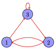

Matrices#
A matrix is a rectangular array of numbers, for instance
A matrix \(m\times n\) is characterized by its size, that is the number \(m\) of rows and \(n\) of columns, and the set its value are from. In particular, the set of matrices of real numbers of size \(m\times n\) will be denoted \(\mathbb{R}^{m\times n}\). Here the matrix has size \(3\times 4\) since it has 3 rows and 4 columns. To further specify its content (real numbers) we write that the matrix \(\mathbf{A} \in \mathbb{R}^{3\times 4}\). By convention, we write matrices with uppercase bold characters, such as \(\mathbf{A}\) or \(\mathbf{B}\). By contrast we use lowercase bold characters for vectors and plain characters for scalars.
A matrix is a square matrix if its size is \(n\times n\) otherwise it is a rectangular matrix. A line matrix is matrix with size \(1\times n\) and a column matrix is a matrix with size \(n\times 1\). Thus the line matrix and the column matrix given here
both encode a vector, but viewed as matrices they have different sizes and their algebric properties are different.
The elements (or coefficients) of a matrix are denoted by the indices \(i,j\) which designate the row and column respectively. If we denote \(\mathbf{A}\) the matrix above, then \(A_{1,2}\) denotes the scalar element 4. By convention, row and column numbering starts at 1. Two matrices are said to be equal if they have the same size and the corresponding entries contain the same elements.
Sometimes to get more compact notations we write a matrix by enumerating its column vectors:
and sometimes we write a matrix by enumerating its row vectors:
Where do matrices come from ?#
Matrices likely arise in data analysis, image representation, graph representation and as mathematical operators.
Data analysis In data analysis, measures are most of the time arranged as array of numbers, in other words matrices. Here are the first few lines of a classic data set reporting measures from Iris flowers across species:
Sepal Length |
Sepal Width |
Petal Length |
Petal Width |
|
|---|---|---|---|---|
1 |
5.1 |
3.5 |
1.4 |
0.2 |
2 |
4.9 |
3.0 |
1.4 |
0.2 |
3 |
4.7 |
3.2 |
1.3 |
0.2 |
4 |
4.6 |
3.1 |
1.5 |
0.2 |
where the following picture provides hints on how to interpret these measures.

Warning
By contrast with many scientific fields, most of the time linguistic data does not come as tables of measured values but rather as raw text. As illustrated in the previous chapter, tables such as term-document matrices are the output of a function mapping text to a numerical representation.
Image representation Matrices can be used to code images. A grayscale image is represented by a matrix whose integer coefficents range from 0 to 255 . Here is a matrix coding an image:
and here is the corresponding image visualisation.
Graph data representation Graphs are another important source of matrices. In natural language processing they come from networks such as web pages and their hyperlink relation, such as semantic networks like Wordnet, such as social networks and their friend or follow relations etc. A graph such as this one
can be represented by its adjacency matrix:
In general, for a graph \(G=\langle V , E\rangle\) with \(n = |V|\) nodes, and \(\mathbf{A}\) an adjacency matrix \(n\times n\), the element \(A_{ij}\) is set to 1 if \((i,j) \in E\) and is set to 0 otherwise.
As linear maps. In this case matrices are viewed as mathematical operators mapping source vectors to transformed destination vectors. Examples of such linear maps are scaling or rotation matrices among others.
Matrix transpose#
In the next few sections, we review classical algebric operations involving matrices. Let \(\mathbf{A}\) be an \(m\times n\) matrix, its transpose \(\mathbf{A}^\top\) is a matrix \(n\times m\) where each entry a has value \(A^\top_{ij} = A_{ji}\).
Example
Note that if we transpose again the transposed matrix, we obtain the original matrix: \((\mathbf{A}^\top)^\top = \mathbf{A}\). There is a remarkable case: the symmetric matrix. A symmetric matrix is a matrix \(\mathbf{A}\) such that \(\mathbf{A} = \mathbf{A}^\top\), as illustrated below:
Matrix addition#
The addition of two matrices \(\mathbf{A}\) and \(\mathbf{B}\) of size \(m\times n\) consists in producing a new matrix whose elements are the sum of the corresponding elements in the original matrices:
Example
Matrix addition is commutative \(\mathbf{A}+\mathbf{B} = \mathbf{B}+\mathbf{A}\), associative \((\mathbf{A}+\mathbf{B}) + \mathbf{C}= \mathbf{A}+(\mathbf{B} + \mathbf{C})\) has neutral element \(\mathbf{0}\) and the transposition of a sum is the sum of the transpositions: \((\mathbf{A} +\mathbf{B})^\top = \mathbf{A}^\top+\mathbf{B}^\top\)
Matrix scalar product#
Given a scalar \(a\) and a matrix \(\mathbf{X}\), the matrix scalar product is defined as:
Example
Matrix scalar product is distributive for scalar addition \((a+b) \mathbf{A} = a\mathbf{A}+b\mathbf{A}\) and associative for scalar multiplication \((ab) \mathbf{A} = a(b\mathbf{A})\)
Matrix vector product#
Let \(S\) be a set of numbers, the matrix vector product supposes a matrix \(\mathbf{A}\in S^{m\times n}\) and a vector \(\mathbf{x}\in S^n\) and yields a vector in \(S^m\).
This operation is not commutative and breaks down in two cases. Either \(\mathbf{A} \mathbf{x}\) is the product where the vector is at the right of the matrix or \( \mathbf{x}^\top \mathbf{A} \) where \(\mathbf{x}^\top\) is a line vector on the left of \(\mathbf{A}\)
\(\mathbf{A} \mathbf{x}\)#
There are several ways to view and interpret this operation. First as a parallel dot product where the result is seen as the dot product of each line of the matrix with the vector \(\mathbf{x}\):
We can also view the operation as a linear combination of the vector \(\mathbf{x}\) with the matrix columns:
Example
Here is the computation performed as a parallel dot product:
and now as a linear combination:
\(\mathbf{x}^\top \mathbf{A}\)#
In this second case, the operation takes the form:
Again the operation can be seen as a parallel dot product between \(\mathbf{x}\) and each column of \(\mathbf{A}\)
and it can also be viewed as a linear combination between \(\mathbf{x}\) and each line of \(\mathbf{A}\)
Example
The operation viewed as a paralell dot product:
and now as a linear combination:
Matrix matrix multiplication#
Let \(\mathbf{A}\), \(\mathbf{B}\) be two matrices of sizes \(m\times p\) and \(p\times n\) respectively, the multiplication of \(\mathbf{A}\) and \(\mathbf{B}\) generates the matrix \(\mathbf{AB}\) of size \(m \times n\):
In other words each coefficient \(c_{ij}\) of the resulting matrix \(\mathbf{AB}\) is computed from the dot product of line \(\mathbf{a}_i\) and column \(\mathbf{b}_j\).
Example
Note
The vector dot product and the matrix vector product are specific cases of matrix matrix products. The vector dot product involves multiplying a line vector \(\mathbf{x}^\top\) of size \(1\times p\) with a column vector \(\mathbf{y}\) of size \(p\times 1\) yielding a matrix of size \(1\times 1\) which is a scalar.
and it should be quite clear that the matrix vector product involves the multiplication of matrix \(\mathbf{A}\) of size \(m\times p\) with a column vector \(\mathbf{x}\) of size \(p\times 1\) (or a line vector \(\mathbf{x}\) of size \(1\times p\) with a matrix \(\mathbf{A}\) of size \(p\times n\))
Let \(\mathbf{A}\) , \(\mathbf{B}\), \(\mathbf{C}\) be matrices. In general matrix multiplication is not commutative but matrix multiplication is associative provided that the sizes of the matrices follow a pattern of the form \(\mathbf{A} : m\times p\), \(\mathbf{B} : p\times q\) et \(\mathbf{C} : q\times n\). If matrices follow the pattern \(\mathbf{A} : m\times p\), \(\mathbf{B} : p\times n\), \(\mathbf{C} : p\times n\), then matrix multiplication distributes over matrix addition: \(\mathbf{A}(\mathbf{B}+\mathbf{C}) = \mathbf{AB}+\mathbf{BC}\). And finally the transpose of a matrix matrix product is the product of the transposes of each matrix in reverse order \((\mathbf{AB})^\top = \mathbf{B}^\top \mathbf{A}^\top\)
Linear maps#
Matrices can be viewed as an implementation for mathematical operators generalizing scalar linear functions to vectors. For scalars from some set \(S\) we define a linear function as \(f(x) = ax\) performing the mapping \(f:S\mapsto S\). Linear maps generalizes this notion to vectors and define maps of the form \(F:S^n \mapsto S^m\) from an input vector space to an output vector space. Thus for a vector \(\mathbf{x} = (x_1\ldots x_n)\) a linear map outputs a vector:
in such a way that each \(f_i(\mathbf{x})\) is linear wrt its input, that is \(f_i(\mathbf{x}) = a_1x_1 + \ldots a_n x_n\) where the \(a_j\) are constants. It should now be obvious that matrices implement linear maps and that matrix vector products instanciate their evaluation:
To check that a map \(F\) is linear, we check that \(F\) verifies:
\(F(\mathbf{x}+\mathbf{y}) = F(\mathbf{x})+F(\mathbf{y})\)
\(F(a\mathbf{x}) = a F(\mathbf{x})\)
Example
We can verify that \(f(x) = x^2\) is not linear. This can be seen by considering the multiplicative case: \(a f(x) = a x^2\) whereas \(f(a x^2) = a^2 x^2\).
On the other hand, \(f(x) = 2x\) is linear. We verify both cases:
and
Note (Linearity)
Why do we care about linearity ? In general problems that can be reduced or approximated reasonably well by linear functions or linear maps are very substantially easier to solve than non linear problems. In general linear problems can be solved by analytical and/or efficient methods while non linear problems require more involved developments such as numerical simulations.
Square matrices#
A square matrix is a matrix whose size is \(n\times n\). Among matrices, square matrices hold a special position: they are used to express many common linear maps, we can compute their determinant and we can also compute an inverse for this class of matrices. And finally we can compute their eigenvectors with their associated eigenvalues.
Examples from geometry#
We start by providing a few examples of square matrices used as linear maps for 2D geometrical transformations: scaling, rotation and projection. For illustration purposes, we assume a data set of \(n\) vectors stored as columns in a matrix \(\mathbf{X}\in\mathbb{R}^{2\times n}\). Each such vector is interpreted as a point in the plane. We represent as blue point in figure Fig. 1 the vectors \((1,1)\), \((2,2)\) and \((3,3)\).
Fig. 1 Common Geometric transforms as linear maps#
The first transformation performed is the scaling of vectors. This operation is generally performed using a diagonal matrix of the form
In figure Fig. 1 , the orange points are generated from the blue points using the linear map expressed by the matrix \(\mathbf{S}=\frac{1}{5}\mathbf{I}\), that is:
Note that scaling need not be uniform, we illustrate this case with the green dots. and a diagonal matrix \(\mathbf{D}\) where the \(\lambda_i\) have different values.
To generate a rotation, one instanciates a rotation matrix, that is a matrix of the form:
The vectors resulting from the computation \(\mathbf{RX}\) are illustrated with red dots on figure Fig. 1. We fixed \(\theta = \pi/2\) (angles are expressed in radians). Finally we illustrate a projection map. Such a map can be expressed with a matrix of the form:
This is a diagonal matrix where some \(\lambda_i\) on the diagonal are equal to 0. The result of the projection \(\mathbf{PX}\) is illustrated with purple dots in figure Fig. 1.
Diagonal matrices#
Among square matrices, diagonal matrices enjoy some appealing mathematical properties: computation of determinants, inverses, eigenvalues and eigenvectors are substantially easier than for the general class of square matrices.
The diagonal of a square matrix \(\mathbf{A}\) is the subset of elements \(a_{i,j}\) whose coordinates satisfy \(i=j\). A diagonal matrix is a matrix whose elements are null except those of the diagonal that may be non null. Thus the scaling matrices and the projection matrix given earlier are all instances of diagonal matrices. Here is another example of diagonal matrix with size \(4\times 4\):
A diagonal matrix whose elements of the diagonal are all equal to 1 is called the identity matrix and written as \(\mathbf{I}\).
Determinant#
The determinant of a matrix is the scalar \(|\mathbf{A}|\) (or det(\(\mathbf{A}\)) ) that can be computed for any square matrix \(\mathbf{A}\). The determinant is of crucial importance when computing the inverse of a matrix. A singular matrix \(\mathbf{A}\) is a matrix whose \(\det(\mathbf{A}) = 0\) and it is therefore non invertible. In case \(\det(\mathbf{A}) \not= 0\), \(\mathbf{A}\) is invertible.
Let \(\mathbf{A}\) be a \(2 \times 2\) matrix with coefficients:
The determinant of the matrix \(\mathbf{A}\) is given by the formula:
Example
Here is how to compute the determinant of a \(2\times 2\) matrix:
Warning
For the general case of \(n\times n\) matrices (with \(n > 2\)) the computations become more involved as \(n\) increases significantly and it is generally practically easier to rely on numerical methods. There are a few special cases however where the computation of the determinant remains simple even with large \(n\).
For any value of \(n\), the determinant of upper triangular (\(\mathbf{U}\)), lower triangular matrices (\(\mathbf{L}\)) and diagonal matrices is equal to the product of the elements of the diagonal.
An upper triangular matrix is a matrix whose elements below the diagonal are 0 (\(a_{ij} = 0\) if \(j > i\)). A lower triangular matrix is a matrix whose elements above the diagonal are 0 (\(a_{ij} = 0\) if \(i<j\)). Thus diagonal matrices are both lower triangular and lower triangular. Numerical methods for computing determinants take advantage of these special cases for solving the more general case.
Note (condition number)
Trying to inverse a matrix with a null determinant is to be thought as the counterpart as attempting to divide a real number by 0. When a matrix has a determinant close to 0, it becomes a tricky object to compute with.
The condition number \(\kappa(\mathbf{A})\) is a number that indicates how close a matrix is from being singular and thus likely to create numerical instabilities. It relies on the Frobenius Norm, which is defined as:
The condition number is defined as:
The higher the condition number the more likely the matrix is likely to be numerically instable, the lower the better
Matrix inverse#
The matrix inverse provides a form of division for matrices. The inverse \(\mathbf{A}^{-1}\), of the square matrix \(\mathbf{A}\) satisfies the relation:
That is \(\mathbf{A}\) multiplied by its inverse yields the identity matrix much like a real \(a\) multiplied by its inverse \(\frac{1}{a}\) yields \(1\). For the case of a \(2\times 2\) matrix of the form
the inverse is found analytically with the formula:
that is by multiplying a scalar, the inverse of the determinant, with the comatrix of \(\mathbf{A}\). As can be seen, the computation fails in case \(\det(\mathbf{A}) = 0\). The matrix is therefore non invertible when its determinant is null.
Example
We can check that \(\mathbf{AA}^{-1} = \mathbf{I}\) as follows:
We can easily prove the formula for the \(2\times 2\) case:
For cases where \(n >2\) while analytical methods still exist, it is generally more convenient to rely on numerical methods for computing the matrix inverse such as the Gauss Jordan method for instance.
Warning
Matrices with colinear columns are non invertible. We can illustrate this case with the following example:
The determinant is null and the inversion is not possible.
Diagonal matrices
In case \(\mathbf{A}\) is a diagonal matrix of size \(n\times n\), its inverse is easy to compute and it neither requires a determinant nor a comatrix. Let \(\lambda_1 \ldots \lambda_n\) be the elements of the diagonal of \(\mathbf{A}\). Then \(\mathbf{A}^{-1}\) is a diagonal matrix with diagonal elements \(\frac{1}{\lambda_1} \ldots \frac{1}{\lambda_n}\). A diagonal matrix is non invertible if at least one of its diagonal element is zero.
Orthonormal matrices
Two vectors are orthonormal if they are orthogonal and they are unit vectors: they have unit norm. An orthonormal matrix is a matrix such that its rows and columns are orthonormal vectors.
Orthonormal matrices are another case of “easy to invert” matrices since an orthonormal matrix verifies the property:
That is for this family of matrices we have that \(\mathbf{A}^{-1} = \mathbf{A}^\top \)
Eigenvectors and eigenvalues#
We start by providing a visual introduction to eigenvectors and eigenvalues from Fig. 2.
Fig. 2 The transformation of a diagonal matrix \(\mathbf{D}\) (left) and the transformation of a symmetric matrix \(\mathbf{S}\) (right) with their respective eigenvectors#
The figure displays the effect of mapping a matrix \(\mathbf{X}\in\mathbb{R}^{2\times 8}\) of 2D vectors (in blue) with a diagonal matrix \(\mathbf{D}\) on the left and with a symmetrix matrix \(\mathbf{S}\) on the right. The resulting vectors, respectively \(\mathbf{DX}\) and \(\mathbf{SX}\), are plotted in red.
When comparing input and output vector in both plots we can observe that most vectors are both rotated and scaled. Some of them are not, they are only scaled, and are illustrated with black arrows: these are the eigenvectors of each matrix. The scale of each eigenvector is given by a corresponding eigenvalue. These scaled eigenvectors are provided in gray.
As can be seen from the illustration, eigenvectors are important as they form a basis for the output vectors where the scaling can be performed by a diagonal matrix. For matrix \(\mathbf{D}\) the basis for the input and output vectors does not change. But for matrix \(\mathbf{S}\), the eigenvectors provide a basis from which the transformation is just a scaling. In other words, within this new basis the transformation is given by a diagonal matrix.
Eigenvectors and Eigenvalues A non null vector that right multiplies a matrix \(\mathbf{A}\) and whose resulting vector is only scaled by the matrix is an eigenvector of \(\mathbf{A}\):
the scaling scalar value \(\lambda\) is the corresponding eigenvalue.
Computing eigenvectors and eigenvalues Computing analytically the eigenvectors and eigenvalues of an \(n\times n\) matrix is only doable when \(n\) is small. We illustrate the method for a \(2\times 2\) matrix. We start by rewriting:
To satisfy this last equality, \(\mathbf{x}\) cannot be null by definition of eigenvectors, therefore \( \mathbf{A} - \lambda \mathbf{I} \) must be null and if it is null it is non invertible which means that the determinant must be null, that is: \(\det(\mathbf{A} - \lambda \mathbf{I}) = 0\).
For the \(2\times 2\) case, we can solve for \(\lambda\):
For each eigenvalue, that is for each value of \(\lambda\), we can search its eigenvector from the equality \( (\mathbf{A} - \lambda\mathbf{I})\mathbf{x} = \mathbf{0}\)
Example
Let us consider first the diagonal matrix:
Setting \(\det(\mathbf{A} - \lambda \mathbf{I}) = 0\) and solving yields:
Thus we have that either \(\lambda = 4\) or \(\lambda = 2\). We have two distinct eigenvalues. For each such eigenvalue we get the corresponding eigenvector by solving \( (\mathbf{A} - \lambda\mathbf{I})\mathbf{x} = \mathbf{0}\), that is for \(\lambda = 4\):
We conclude that \(x_2 = 0\) and that there are an infinite number of solutions for \(x_1\). By convention we keep the solution for which \(||\mathbf{x}|| = 1\) that is \(\mathbf{x}^{(1)}= \begin{bmatrix} 1\\ 0 \end{bmatrix} \)
Now solving for \(\lambda = 2\) we get:
We conclude that \(x_1 = 0\) and we choose \(x_2 = 1\) to get an eigenvector with unit norm. The second eigenvector is therefore \(\mathbf{x}^{(2)} = \begin{bmatrix} 0 \\ 1\end{bmatrix}\). Note that for diagonal matrix, it always true that the diagonal coefficients are eigenvalues and that we can get one hot unit eigenvectors.
Example
Let us consider now the symmetric matrix:
Setting \(\det(\mathbf{A} - \lambda \mathbf{I}) = 0\) and solving yields:
Solving the second order polynomial yields \(\lambda = \frac{5}{2}\) or \(\lambda = \frac{7}{2}\).
For each eigenvalue we get the corresponding eigenvector by solving \( (\mathbf{A} - \lambda\mathbf{I})\mathbf{x} = \mathbf{0}\), that is for \(\lambda = \frac{5}{2}\):
There is again an infinity of solutions, each of which requires \(x_1\) and \(x_2\) to have the same value but opposite signs. To stick with the convention that the eigenvector has unit norm we can use \(\mathbf{x}^{(1)}=\begin{bmatrix} \sqrt{\frac{1}{2}}\\-\sqrt{\frac{1}{2}} \end{bmatrix}\)
Now solving for \(\lambda = \frac{7}{2}\), we get:
All solutions have the property that \(x_1\) and \(x_2\) have the same value. To stick with the convention that the eigenvector has unit norm we can use \(\mathbf{x}^{(2)}=\begin{bmatrix} \sqrt{\frac{1}{2}}\\\sqrt{\frac{1}{2}} \end{bmatrix}\)
Warning
For a square matrix of size \(n\times n\) there are at most \(n\) eigenvalues/eigenvectors
Matrix Diagonalization#
Diagonal matrices make life easy… There is interest in expressing a given linear map as a diagonal matrix to make computations easier. In this section we show how to factorize some non diagonal matrices as a product of three matrices, including a diagonal matrix. This is called matrix diagonalization. Matrix diagonalization actually provides methods to simplify computations such as computing matrix power. But it also has interest in data analysis when \(\mathbf{A}\) is a “data” matrix or in graph analysis when \(\mathbf{A}\) is a “graph” matrix as illustrated in other chapters.
A matrix \(\mathbf{A}\) of size \(n\times n\) is diagonalizable if it can be factorized as a product of 3 matrices:
where \(\mathbf{P}\) is a matrix whose columns are eigenvectors and \(\mathbf{D}\) is a diagonal matrix whose elements
\(\lambda_1\ldots \lambda_n\) are eigenvalues.
To see that it is true, assume \(\mathbf{P}\) is the square matrix:
then the equality relating \(\mathbf{A}\) with the diagonal matrix \(\mathbf{D}\):
holds if and only if the columns \(\mathbf{v}_i\)of \(\mathbf{P}\) are eigenvectors and the \(\lambda_i\) are their corresponding eigenvalues. This is shown by expanding the equality:
thus for each \(\mathbf{Av}_i = \lambda_i\mathbf{v}_i\), \( \lambda_i\) and \(\mathbf{v}_i\) are respectively eigenvalues and eigenvectors. We further require \(\mathbf{P}\) to be invertible and we get either the diagonalization formula \(\mathbf{D} = \mathbf{P}^{-1}\mathbf{A}\mathbf{P}\) or the decomposition used elsewhere in this text:
Warning
Not all matrices are diagonalizable. Diagonalization requires \(\mathbf{P}\) to be invertible, that is to have a non zero determinant or, stated differently, the vectors \(\mathbf{v}_1\ldots \mathbf{v}_n\) must be linearly independent.
In case the matrix is diagonalizable, observe that there are multiple possible diagonalizations for a given matrix, typically depending on the ordering of the eigenvalues. The usual convention is to order them from greater to lower, thus \(\lambda_1 > \lambda_2 > \ldots > \lambda_n\)
Spectral theorem#
In the case of symmetric matrices there is a stronger form of factorization given by the spectral theorem:
Every symmetric matrix is diagonalizable and the columns of the \(\mathbf{P}\) matrix are guaranteed to be orthogonal eigenvectors.
Exemple
To get an intuition of the factorization described here, let us consider the product of the matrix \(\mathbf{A}\) with the data \(\mathbf{X}\). Let \(\mathbf{A} = \begin{bmatrix} 3&\frac{1}{2}\\ \frac{1}{2}&3 \end{bmatrix} \) and \(\mathbf{X}\in\mathbb{R}^{2\times n}\) be the set of 2D coordinates depicted in Figure Fig. 3. Thus given the spectral theorem we can express the product as:
Results from previous exercises allow the substitution:
We illustrate in figure Fig. 3 each step of the computation
{kind=link}
Fig. 3 The transformation of the matrix \(\mathbf{X}\) through the decomposition of \(\mathbf{AX}\). From left to right. Given the input \(\mathbf{X}\), \(\mathbf{P}^\top\mathbf{X}\) first rotates the data, then it scales it with the diagonal matrix \(\mathbf{D}\) and finally rotates it again with \(\mathbf{P}\) yielding the final result#
Exercises#
Given the matrices and vectors:
Evaluate:
\(\mathbf{Ax}\)
\(\mathbf{Bx}\)
\(\mathbf{Az}\)
\(\mathbf{B}^\top\mathbf{x}\)
\(\mathbf{By}\)
\(\mathbf{A}^\top\mathbf{z}\)
Given matrices \(\mathbf{A},\mathbf{B}\) and the vector \(\mathbf{x}\) such that:
Evaluate the following expressions:
\((\mathbf{AB})\mathbf{x}\)
\(\mathbf{A}(\mathbf{B}\mathbf{x})\)
\(\mathbf{A}\mathbf{x}^\top\mathbf{B}\)
\(\mathbf{B}\mathbf{A}\mathbf{x}\)
In python, plot the following matrix as 2D vectors:
and the matrix \(\mathbf{SRX}\) with \(\mathbf{S}\) and \(\mathbf{R}\) defined as:
explain in words what the operation \(\mathbf{SR}\) represents.
Check that the following matrices are inverse of each other:
For exercises 1. 2. and 4. implement them with
numpy(find the relevant functions in the library) and check that the results match those you get by manual resolution.